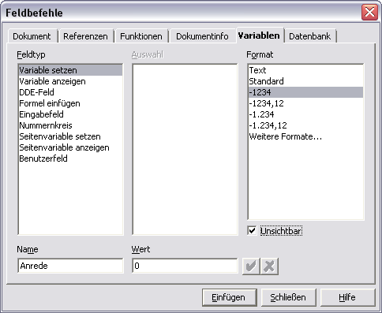
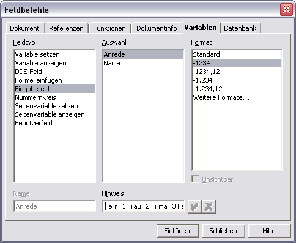
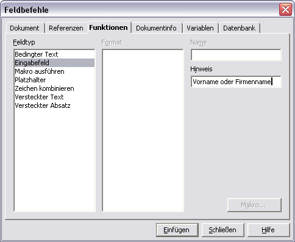
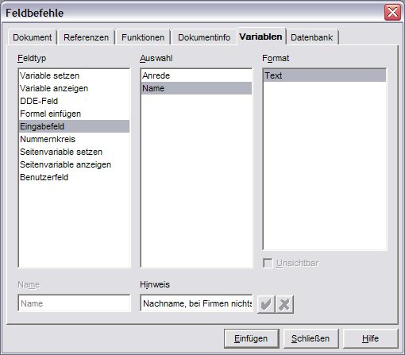
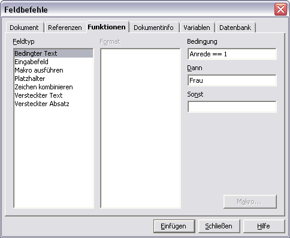

Diese Anleitung bezieht sich auf die Programmversion 1 von OpenOffice.org. Die vollständige Liste aktueller Dokumentationen finden Sie im Dokumentationsportal.
Erstellung eines professionellen Firmen- bzw. Privatbriefes unter Verwendung von Eingabefeldern, Variablen und bedingtem Text
An wen richtet sich diese Anleitung?
Sie haben eine Firma oder arbeiten in einer
Behörde und haben zahlreiche Dokumente mit nahezu gleichem
Inhalt zu versenden? Das ist eigentlich der klassische Anwendungsfall
für einen Serienbrief. Aber lohnt sich der Aufwand die Adressen
in einer Datenbank zu erfassen, wenn ich genau weiß, dass ich
dem Empfänger nur ein Anschreiben schicke? Natürlich muss
auch der Inhalt des Dokuments dem Empfänger individuell
angepasst sein. Das ist mit einem Serienbrief nur bedingt möglich.
Auch datenschutzrechtliche Gründe können dem Sammeln von
Adressen in Datenbanken entgegenstehen. Trotzdem ist eine rationelle
Abarbeitung des zeitraubenden Schriftverkehrs notwendig. Meist
hat man mehrere verschiedene Typen von Schreiben zu verfassen. Dann
lohnt es sich, Vorlagen für die einzelnen Dokumenttypen z.B.
Anschreiben, Rechnung, Bescheid, etc- anzulegen. Das haben Sie
vermutlich schon getan. Aber wäre es nicht praktisch, wenn Sie
das Programm beim Erstellen eines neuen Dokuments gleich nach der
Empfängeradresse und weiteren variablen Angaben, z.B. der
Rechnungssumme fragen würde? Diese könnten doch auch gleich
an die richtigen Stellen im Dokument eingtragen werden. Bei der
Gelegenheit könnte OpenOffice.org doch gleich die richtige
Anrede für den Empfänger, z.B.
"Sehr geehrter Herr
Eichhorn" eintragen, schließlich haben Sie doch schon im Adressfeld an einen Herrn
Eichhorn geschrieben.
Wenn Sie erfahren möchten, wie sich
diese Funktionen ohne Programmierung umsetzen lassen, dann sollten
Sie dieses Dokument zu Ende lesen. Mit dem neu erworbenen Wissen
lassen sich aber auch gänzlich andere Anwendungen, als die eben
beschriebenen, realisieren. Es lohnt sich also auch für den
Privatanwender mal einen Blick auf diese Anleitung zu werfen.
Vielleicht erhalten Sie eine Anregung für weitere
Anwendungsfelder.
Ich wünsche Ihnen viel Spaß und Erfolg bei der Arbeit mit OpenOffice.org!
Allgemeines:
Diese Anleitung soll Ihnen helfen, einen Überblick über die Möglichkeiten der Verwendung von Variablen in Verbindung mit Eingabefeldern in OpenOffice.org zu gewinnen. Das Ganze erfolgt ohne Programmierung! Es werden nur im Programm enthaltene Funktionen angewendet und kombiniert. Als Beispiel wurde ein Anschreiben gewählt, das in Firmen und Behörden sicher öfter Verwendung findet. Dabei soll der Nutzer im Adressfeld außer den Adressdaten einmal den Typ des Adressaten (Frau, Herr, Firma, Familie u.ä) bestimmen. Aus diesen Angaben soll dann im Dokumententext die Anrede automatisch bestimmt werden. Die hier beschriebenen Schritte sind nur einmal auszuführen. Daher lohnt sich der sicher etwas höhere Aufwand zur Erstellung der Vorlage auf jeden Fall, denn Sie werden in Zukunft bei jedem Dokument Zeit und Tipparbeit sparen!!
Was sind Eingabefelder und wozu dienen sie?
Die OpenOffice.org Hilfe sagt Folgendes dazu:
"Dieser Dialog dient zur Definition eines Eingabefeldes. Es gibt zwei Arten von Eingabefeldern, die in das Dokument eingefügt werden können: Funktionsfelder vom Typ Eingabefeld dienen zur Texteingabe, während Variablenfelder vom Typ Eingabefeld zur Definition eines neuen Variablenwertes dienen. Wenn Sie in einem Dokument auf einen Feldbefehl vom Typ Eingabefeld treffen, wechselt der Mauszeiger sein Aussehen in eine Hand mit ausgestrecktem Zeigefinger. Durch Anklicken öffnet sich dieser Dialog, und Sie können den im unteren Textfeld angezeigten Text oder den Wert editieren."
Vereinfacht gesagt kann man mit Eingabefeldern Text an vordefinierte Stellen im Dokument einfügen oder eine Variable (keine Angst es wird nicht programmiert) zur späteren Steuerung des Dokuments definieren.
Wie geht's nun wirklich?
1. Einfügen der Variablen
Erzeugen Sie ein neues Textdokument über DATEI - NEU - TEXTDOKUMENT.Zunächst definieren Sie zwei Variablen, die im weiteren Verlauf benötigt werden. Gestalten Sie das Layout nach Ihren Wünschen. Sie können z.B. eine Kopfzeile mit Firmenlogo und Anschrift und eine Fußzeile mit Ihrer Bankverbindung anzeigen.
1.1 Definieren der Variable "Anrede"
Fügen Sie am Anfang des Textbereichs eine Variable wie folgt ein: Klicken Sie in der Menüleiste auf EINFÜGEN - FELDBEFEHL - ANDERE. Dieser Dialog sieht je nach Betriebssystem (hier Windows XP) etwa so aus:

Wählen Sie dort den Reiter VARIABLEN(oder drücken Sie
<STRG> + <F2>)! Wählen
Sie links oben den Feldtyp Variablen setzen! Geben Sie links unten bei Name einen
aussagekräftigen Bezeichner für die Variable an! In unserem
Beispiel wählen Sie Anrede. Als Wert der
Variablen geben Sie eine 0 (NULL) ein. Der nächste
Schritt ist die Auswahl des Formats der Variable. Klicken Sie dazu im
Feldbefehldialog auf der rechten Seite das Format -1234 (Zahl)
an. Als letztes setzen Sie den Haken bei unsichtbar, denn die
Variable soll im Ausdruck nicht erscheinen. Bestätigen Sie
den Dialog mit Einfügen und schließen Sie
ihn!
1.2 Definieren der Variable "Name"
Als Nächstes benötigen wir noch eine weitere Variable für den Namen des Adressaten, denn der Nutzer der Vorlage soll ihn nur einmal pro Dokument eingeben müssen. Fügen Sie eine neue Variable ein! Verwenden Sie nun die Tastenkombination für Profis <STRG> + <F2>. Sie können natürlich auch das Menü EINFÜGEN - FELDBEFEHL - ANDERE - VARIABLE verwenden. Die neue Variable heißt Name und ist vom Typ Text (weitere Formate). Setzen Sie auch hier wieder den Haken vor unsichtbar. Als WERT der Variablen tragen Sie bitte nur ein Leerzeichen ein. Erst jetzt können Sie den Dialog mit Einfügen und Schließen verlassen.
Sie werden sehen, dass sich die Mühe des Definierens von Variablen gelohnt hat!
Beim Erstellen eines neuen Dokuments auf Basis der Vorlage soll ein Eingabefeld erscheinen, in dem der Nutzer durch Eingeben einer Zahl den Typ des Empfängers bestimmt. Dabei sollen die einzelnen Zahlen folgenden Typen entsprechen:
| Kennzahl | Typ des Empfängers |
|---|---|
| 1 | Frau |
| 2 | Herr |
| 3 | Firma |
| 4 | Familie |
Sie können die Typen natürlich beliebig ändern und ergänzen. Dieses Eingabefeld werden Sie nun erstellen.
1.3 Erzeugen des Eingabefeldes zur Steuerung der Anrede
In das folgende Eingabefeld wird vom
Benutzer die Ziffer getippt, welche die Anrede im Dokument steuert.
In diesem Fall wurde eine Zahl gewählt, weil man Tipparbeit
spart. Sie könnten auch Buchstaben, oder ganze Wörter
verwenden.
Wechseln Sie in Ihrem Textdokument in die nächste
Zeile. Fügen Sie dort einen Feldbefehl vom Typ Eingabefeld
ein. Gehen Sie dazu wie folgt vor:
Drücken Sie <STRG> +
<F2>! Es erscheint der Ihnen bekannte Dialog für die
Feldbefehle. Wählen Sie wieder den Reiter VARIABLEN!
Klicken Sie links bei Feldtyp auf Eingabefeld, in der
Mitte bei Auswahl auf Anrede und rechts bei Format
auf -1234 (Zahl). Nun müssen Sie noch bei Hinweis
(unten in der Mitte) einen kurzen Tipp für den Nutzer eingeben,
damit er weiß, was er in diesem Eingabefeld tun soll. In
unserem Fall soll eine Zahl eingegeben werden. Der Hinweis könnte
also lauten: 1=Frau 2=Herr 3=Firma 4=Familie Nachdem
Sie den Hinweistext eingegeben haben, klicken Sie auf Einfügen!
Nun erscheint Ihr Eingabefeld am Bildschirm. Nun können Sie das
Eingabefeld mit einer Standardanrede vorbelegen. Das kann also z.B.
die 1 für "Frau" sein. Bestätigen Sie das Eingabefeld
mit OK.
Die nachfolgende Grafik zeigt den Feldbefehldialog
mit den eben beschriebenen Eingaben.

Herzlichen
Glückwunsch! Sie haben den schwersten Teil geschafft!
In Ihrem Textdokument steht nun eine grau hinterlegte EINS. Diese soll natürlich nicht mit gedruckt werden, denn sie dient nur zur Steuerung des Dokuments. Dazu setzen Sie die Zeichenfarbe auf weiß. Gehen Sie dazu mit den Cursortasten vor die Zahl und drücken Sie <SHIFT> + <CURSOR RECHTS> auf dem Cursorblock Ihrer Tastatur. Damit ist das Feld markiert. Alternativ können Sie die 1 auch mit der Maus markieren. Klicken Sie nun in der Menüleiste auf FORMAT - ZEICHEN und stellen Sie dort unter dem Reiter SCHRIFTEFFEKT die Schriftfarbe auf Weiß!
2. Erstellen des Adressbereichs mit Eingabefeldern
Nun können wir beginnen den eigentlichen Adressbereich zu gestalten.
Positionieren Sie die einzelnen Eingabefelder für die Adressdaten im
Anschriftenfeld. Die Erfassung per Eingabefeld hat den Vorteil, dass
auch wenig geübte Computeranwender die Adressdaten sicher an die
richtigen Stellen im Dokument platzieren. Die Anschrift ist in einem
Umschlag mit Sichtfeld auf jeden Fall sichtbar! Platzieren Sie den
Cursor an die Stelle im Dokument, an der der Vorname bzw. Firmenname
des Empfängers stehen soll. Vorlagen nach DIN 8005 finden Sie
auf http://www.de.Openoffice.org.
Drücken Sie <STRG> + <F2>,
um den Dialog der Eingabefelder aufzurufen. Wählen Sie diesmal
den Reiter FUNKTIONEN und dort EINGABEFELD!
Geben Sie einen Hinweis für den späteren Nutzer ein, z.B.:
Vorname oder Firmenname!
Bestätigen Sie den Dialog mit Einfügen!
Es erscheint das Eingabefeld am Bildschirm. Da der Vorname bzw.
Firmenname in jedem Anschreiben ein anderer ist, bestätigen Sie
einfach mit OK. Verlassen Sie den Dialog mit Schließen!
Sie sehen in Ihrem Dokument ein graues Kästchen. Das ist Ihr
Eingabefeld - noch ohne Inhalt. Die folgende Abbildung verdeutlicht
Ihnen die eben beschriebenen Schritte.

Fügen
Sie im Text ein Leerzeichen hinter dem Eingabefeld für den
Vornamen ein!
Als
Nächstes fügen Sie ein Eingabefeld für den Nachnamen
ein!
WICHTIG:
Wählen Sie diesmal den Reiter VARIABLEN
und dort auf der linken Seite den Punkt Eingabefeld.
Geben Sie als Hinweis
für den Nutzer Nachname, bei Firmen nichts
ein!
Klicken Sie in der mittleren Spalte bei AUSWAHL
auf NAME! Wählen
Sie als FORMAT unter
weitere Formate das Format TEXT. Klicken
Sie auf EINFÜGEN.
Bestätigen Sie das Eingabefeld wieder mit OK
und schließen
Sie den Dialog. Die folgende Grafik zeigt das eben beschriebene
Verfahren.

Wechseln
Sie auf die nächste Zeile. Dort sollen Straße und
Hausnummer stehen.
Fügen Sie ein neues Eingabefeld (<STRG>
+ <F2>) ein. Diesmal
wählen Sie wieder den Reiter FUNKTIONEN.
Dort ist das Eingabefeld wieder erste Wahl. Geben Sie als Hinweis
Folgendes ein: Straße Hausnummer!
Fügen Sie eine Leerzeile in Ihr Dokument ein.
Nun
kommt das letzte Eingabefeld für Postleitzahl und Ort. Achten
Sie darauf, dass Sie das Eingabefeld aus dem Reiter FUNKTIONEN
auswählen! Geben Sie als Hinweis PLZ ORT
ein! Klicken Sie auf EINFÜGEN.
Bestätigen Sie das Eingabefeld wieder mit OK
und schließen
Sie den Dialog.
Als Nächstes fügen Sie
eine Betreffzeile in Ihre zukünftige Vorlage ein. Ob Sie den
Betreff auch über ein Eingabefeld erzeugen bleibt Ihre
Entscheidung. Ist er variabel, so ist das sicher eine Überlegung
wert.
Das war die Pflicht. Nun kommt die Kür! Bis jetzt
hat die Vorlage nur Arbeit gemacht. Ab jetzt spart sie auch welche!
In der Anrede Ihres Schreibens werden Sie auf den soeben definierten
Namen zurückgreifen.
3. Bestimmen der Anrede durch bedingten Text
In diesem Abschnitt erfahren Sie, wie die bereits definierten Variablen dazu verwenden können, die Anrede in Ihrem Dokument automatisch erzeugen zu lassen. Folgende Schritte sind dafür notwendig:
Wechseln Sie an die Stelle im Dokument, an der die Anrede stehen soll.
Geben Sie als Anrede Folgendes ein: Sehr geehrte
Als Nächstes werden Sie
bedingten Text erzeugen, der die eben erzeugte Anrede
vervollständigt. Keine Angst, es ist mit OpenOffice.org ganz
einfach! Setzen
Sie den Cursor direkt hinter das letzte Zeichen der Anrede (Sehr
geehrte), wenn er nicht schon dort steht. Rufen Sie als Nächstes
wieder den Dialog der Feldbefehle mit <STRG> + <F2>
auf. Wählen Sie den Reiter FUNKTIONEN
aus. Klicken Sie in der linken Spalte (Feldtyp) auf Bedingter
Text! Geben Sie auf
der rechten Seite als BEDINGUNG
Folgendes ein: Anrede == 1
(Anm.: Bei den Zeichen zwischen Anrede und der Eins handelt es sich
um zwei Gleichheitszeichen)
Das sollte etwa so aussehen:

Eine
Zeile tiefer bei DANN
geben Sie ein, was im Text erscheinen soll, wenn diese Bedingung
erfüllt ist. In diesem Beispiel also Frau.
Das
Feld SONST lassen Sie
bitte leer. Drücken Sie Einfügen.
Sie müssen den Dialog nicht schließen, falls Sie es doch
getan haben, rufen Sie ihn mit <STRG> + <F2>
wieder auf! Geben Sie kein Leerzeichen nach dem bedingten Text ein!
Nun sollte das Wort Frau in Ihrem Text stehen, denn die Bedingung
ist erfüllt.
Als Nächstes werden Sie die weiteren
Möglichkeiten der Anrede per bedingtem Text definieren. Gehen
Sie analog vor. Öffnen Sie, wenn notwendig, wieder den Dialog
der Eingabefelder und wählen Sie den Reiter FUNKTIONEN!
Geben Sie die zweite Bedingung ein! Sie lautet diesmal:
Anrede
== 2.
Unter DANN geben Sie
nur r Herr
ein. Die folgende Grafik erläutert diesen Schritt.
Wichtig:
Vergessen Sie nicht das kleine r
und das Leerzeichen danach!
Klicken Sie auf Einfügen
und schließen sie den
Dialog nicht!
Geben
Sie die dritte Bedingung ein: Anrede == 3
DANN Damen
und Herren!
Klicken Sie auf Einfügen.
Lassen Sie den Dialog geöffnet und definieren Sie die vierte
Bedingung:
Anrede == 4
DANN Familie.
Klicken
Sie auf Einfügen
und schließen
Sie den Dialog!
Nun haben Sie eine passende Anrede für den Empfänger in der Anrede. Es fehlt nur noch der Name. Den haben Sie weiter oben in Ihrer Vorlage schon "mühsam" als Variable definiert. Darauf greifen Sie jetzt zurück! Gehen Sie dazu folgendermaßen vor:
- Fügen Sie ein Leerzeichen hinter dem letzten bedingten Text ein!
- Rufen Sie wieder den Dialog für die Eingabefelder auf. (<STRG> + <F2>)
- Wählen Sie den Reiter VARIABLEN aus! Klicken Sie links auf Variablen anzeigen und in der mittleren Spalte klicken Sie auf die gewünschte Variable Name!
- Drücken Sie Einfügen und schließen Sie den Dialog.
Geschafft!
Nun haben Sie es tatsächlich geschafft. Es ging doch ganz ohne
Programmierung, oder? Jetzt können Sie den Textteil Ihres
Dokumentes entsprechend Ihrer Bedürfnisse gestalten. Sollten Sie
den Namen des Empfängers an weiteren Stellen in Ihrem Schreiben
benötigen, so können Sie jederzeit mit dem richtigen
Feldbefehl wieder darauf zurückgreifen.
Möchten Sie
unter dem Text den Namen des Absenders einfügen, so können
Sie wieder einen Feldbefehl verwenden. Dazu müssen Sie die
Benutzerdaten von OpenOffice.org unter EXTRAS - OPTIONEN
ausgefüllt haben. Der passende Feldbefehl ist im
Feldbefehldialog unter DOKUMENT ABSENDER zu finden.
Als letzte Tätigkeit speichern Sie Ihre Vorlage als Dokumentvorlage mit der Erweiterung .stw ab! Probieren Sie Ihre neue Vorlage doch gleich einmal aus! Erstellen Sie ein neues Dokument auf Basis Ihrer Dokumentvorlage! Es sollten nacheinander die Eingabefelder erscheinen und Sie nach den Empfängerangaben fragen. Dann sollte die Anrede schon fix und fertig im Dokument stehen.
4. Fehlersuche und Behebung
Wenn Sie mit Variablen arbeiten, kann es vorkommen, dass Ihre Dokumentvorlage nicht das gewünschte Verhalten zeigt. Versuchen Sie die bereits definierten Variablen zu löschen und neu zu erstellen. Wie Sie Variablen löschen erfahren Sie im nächsten Abschnitt.
4.1 Löschen einer Variablen
Variablen lassen sich erst löschen, wenn alle Stellen, an denen die Variable im Dokument verwendet wird, gelöscht wurden. Sie können leicht überprüfen, ob das der Fall ist.
- Rufen Sie dazu den Dialog der Feldbefehle auf und wechseln Sie zum Reiter VARIABLEN!
- Klicken Sie auf die Variable, die Sie löschen möchten!
- Wenn im unteren Teil des Dialogs ein rotes Kreuz sichtbar ist, können Sie die Variable mit einem Klick darauf löschen.
- Ist das Kreuz ausgegraut (nicht anwählbar), dann wird die Variable noch in Ihrem Dokument verwendet. Entfernen Sie alle Eingabefelder etc. aus Ihrer Dokumentvorlage, die diese Variable verwenden.
4.2 Weitere mögliche Fehlerquellen
Sollte das Zusammenspiel von Variablen, Eingabefeldern und bedingtem Text nicht so funktionieren, wie Sie das wünschen, können Sie folgende Maßnahmen zur Fehlersuche durchführen.
- Lassen Sie sich alle Variablen, Eingabefelder und bedingten Texte anzeigen! Dafür drücken Sie die Tastekombination <STRG> + <F9>. Nun können Sie sehen, welche Werte Ihre Variablen angenommen haben und an welchen Stellen Sie Eingabefelder und bedingten Text verwenden. Durch Doppelklick auf ein Element können Sie seine Eigenschaften anzeigen und bearbeiten.
- Überprüfen Sie, ob Ihre Variablen die richtigen Werte haben! Achten Sie darauf, ob auch das Format der Variablen (Text, oder Zahl etc.) Ihren Wünschen entspricht!
Zusammenfassung
Sie haben die Möglichkeiten des Zusammenspiels von Variablen,
Eingabefeldern und bedingtem Text kennengelernt. Die Festlegung von
Empfängerangaben und Anrede sind nur eine Möglichkeit des
Einsatzes von Variablen und Eingabefeldern. Entwickeln Sie Ihre
eigenen Anwendungen!
Stellen Sie Ihre Vorlagen im lokalen
Netzwerk, bereit und lassen Sie Ihre Kollegen am Nutzen teilhaben.
Danksagung:
Ich möchte mich bei folgenden Personen und Firmen bedanken, die mir geholfen haben diese Anleitung zu schreiben.
Zuerst gilt mein Dank dem Hauptsponsor SUN Microsystems, ohne dessen Freigabe des Quellcodes von StarOffice das ganze OpenOffice.org - Projekt nicht möglich gewesen wäre.
Weiterhin möchte ich mich bei den Mitgliedern des deutschen OpenOffice.org - Teams bedanken. Durch Ihre Arbeit auf den deutschen Mailinglisten habe ich viel über die Funktionen von OpenOffice.org und den korrekten Umgang mit mailinglisten gelernt. Dieses Wissen möchte ich weitergeben.
Mein ganz besonderer Dank gilt meinen Korrekturlesern Piet Gobbers, Sven Vermeulen, Andy Marty und Martin Webermann die mir wertvolle Hinweise zu Inhalt, Formatierung und Rechtschreibung gaben.
Plauen, 01.01.2004
Olaf Eichhorn
Rechtliches:
© Copyright 2004, Olaf Eichhorn
Public Documentation License Notice
The contents of this Documentation are subject to the Public Documentation License Version 1.0 (the "License"); you may only use this Documentation if you comply with the terms of this License. A copy of the License is available at //licenses/PDL.html.
The Original Documentation is "Erstellung eines professionellen Firmen- bzw. Privatbriefes unter Verwendung von Eingabefeldern, Variablen und bedingtem Text ".
The Initial Writer of the Original Documentation is Olaf Eichhorn Copyright © 2004. All Rights Reserved.
Initial Writer contact(s): OEichhorn@openoffice.org
Contributors are:
Portions created by ______ are Copyright (C)_________. All
Rights Reserved.
(Contributor contact(s):________________).
NOTE:
The text of this Appendix may differ slightly from the text of the
notices in the files of the Original Documentation. You should use
the text of this Appendix rather than the text found in the Original
Documentation for Your Modifications.
Bei Fragen zu dieser Anleitung wenden Sie sich bitte an die deutsche Nutzermailingliste. Nähere Informationen dazu erhalten Sie unter http://de.openoffice.org. Sie können mich auch unter folgender Email-Adresse erreichen oeichhorn@openoffice.org